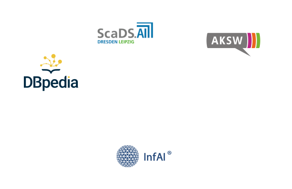

Data Week Leipzig 2022
Forum for Data and AI Enthusiasts in LeipzigWhat is Data Week?
Data Week is a week-long event in Leipzig focusing on digitization in heterogeneous areas of life as well as transparent, traceable and sustainable applications. In addition to the obvious STEM focus of the events, the content also integrates political, scientific and overall societal perspectives on artificial intelligence and data.
The Data Week combines individual event formats in the area of research and transfer (Leipzig Semantic Web Day, DBpedia Meeting, Big Data and AI in Business Workshop), which are organized by the participating scientific and transfer institutions Institute for Applied Informatics and ScaDS.AI Dresden/Leipzig as well as eccenca GmbH, the DBpedia Association and AKSW.
Where?
Neues Rathaus/City Hall
Martin-Luther-Ring 4 - 6
04109 Leipzig
Target group
A new networking event and platform will be created with the Data Week 2022 in Leipzig. In addition to the focus on AI and data, special emphasis will be placed on bringing together representatives from industry and science with municipal authorities. Furthermore, IT experts will present the latest use cases in workshops and lectures. We would also like to invite students, trainees and interested citizens to take a look behind the scenes at Leipzig as an educational location and thus create a forum for IT and data enthusiasts.
Tickets
Tickets will be made available shortly.
Sponsoring
We offer various sponsorship packages. Contact us! We will create a personalized sponsorship package for your organization or company. Please contact us at dataweek@infai.org.
Organization Team

In cooperation with


Please check further information about our team and events here: